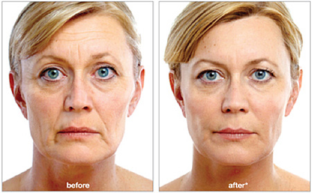

Actúa relajando la musculatura local donde es aplicada, impidiendo la contracción muscular y la visualización de arrugas dinámicas. También actúa como uso preventivo para la formación de arrugas de contracción.
El máximo efecto es visto a los 7 o 10 días de aplicado y el mismo tiene una duración de 4 a 5 meses aproximadamente. Su aplicación es en el tercio superior de la cara: patas de gallo, entrecejos, frente, contribuye a la elevación de la cola de ceja obteniendo una expresión más juvenil y relajada.
Es un procedimiento simple, rápido y no quirúrgico realizado el consultorio médico, por el médico, no requiere internación , pudiendo el paciente volver a sus tareas habituales de inmediato

Ácido Hialurónico: Es un componente presente naturalmente en nuestra piel, sobre todo cuando somos jóvenes. Es el encargado de mantener firme e hidratada la piel. A medida que envejecemos se va perdiendo este valioso componente, haciendo que nuestra piel se vea menos lozana y empiecen a aparecer los temidos surcos y arrugas.
En la estética del rostro los rellenos de ácido hialurónico son útiles en la zona del entrecejo, en los surcos nasogenianos o surcos entre el pómulo y la boca, las líneas de marioneta y los labios.
Su aplicación no requiere hospitalización, es simple pudiendo el paciente volver a sus tareas habituales de inmediato
El microblading es una técnica de maquillaje semipermanente, surgida en Asia, cuyo objetivo es corregir o reconstruir completamente una ceja carente de pelo o ausente, diseñar la ceja, modificar su forma. .Se realiza a traves de la incorporación de pigmentos en la capa mas superficial de la piel dibujando pelo a pelo. Su duración es aproximadamente de 8 meses a 1 año.